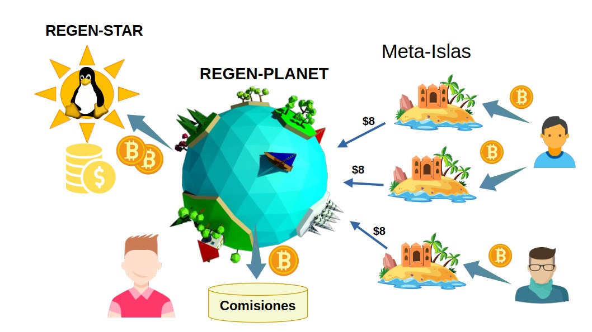

Regen-Star : Organización que Respalda Esfuerzos Colectivos
En FREEDERATION, los proyectos dedicados al mantenimiento del Software Libre se convierten en Regen-Stars, que operan como Franquicias de Responsabilidad Mutua.
Cada Regen-Star establece un pacto de membresía con las Meta-Islas y Regen-Planets a su cargo:
- Para las Meta-Islas afiliadas, la organización de la Regen-Star respalda sus compromisos en la preservación de la Calidad de la Información en redes sociales descentralizadas, como Nostr. A cambio, las Meta-Islands contribuyen a la sostenibilidad del proyecto de Software Libre, recaudan fondos de los patrocinadores que invierten en la promoción de sus contenidos.
- De manera similar, los Regen-Planets gestionan la afiliación de las Meta-Islas que operarán en representación de la Regen-Star, asumiendo la responsabilidad por su futuro desempeño en el respaldo de compromisos y moderación de contenidos. A cambio de su gestión, obtienen comisiones de ventas por afiliación.

Esta relación de beneficio mutuo implica un pacto de responsabilidad, en el que la organización liderada por la Regen-Star debe velar por el comportamiento íntegro de las Meta-Islas bajo su tutela. Asimismo, los operadores de las Meta-Islas tienen poder de voto dentro de la organización.
Fundación de la Regen-Star
Las Regen-Star son creadas con base en la representación de un proyecto Open Source existente, o en su defecto un proyecto de desarrollo de contenidos digitales de dominio público.
Para crear una Regen-Star desde cero, el fundador necesita acuñar un Nucleus-Token desde la DAO de FREEDERATION. Gastando un token de Nucleus-Token, el fundador registra su Regen-Star aportando detalles básicos sobre su proyecto Open Source y perfíl de Nostr.
| Atributo | Descripción |
|---|---|
| name | Identificador del proyecto |
| projectURL | URL del repositorio github o sitio web |
| NostrAccount | Dirección de 32 bytes del perfil de Nostr |
| TargetAddress | Dirección de crypto-billetera para autorizar el control del proyecto. |
Luego de inscribir el proyecto Open Source como una Regen-Star, el fundador puede iniciar una venta inicial de tokens del proyecto brindará a los Early Adopters adquirir un Regen-Planet del proyecto y beneficiarse a futuro de la venta de Meta-Islas. Véase el capítulo de los Regen-Planets para mas detalles sobre la venta inicial a los Early Adopters.
Sin embargo, en su fase inicial la Regen-Star buscará su Acreditación para activar su función de recaudo y expansión de la franquicia. El Prestigio no se desarrolla aún y se mantiene la organización en un estado latente (NEBULOUS) para ser promovida y aprobada por la DAO de FREEDERATION.
Administración de Fondos
La Regen-Star mantiene un fondo común del cuál destinan un porcentaje a financiar tareas de desarrollo y mantenimiento del repositorio del software de código abierto.
Otro porcentaje se destina a la conformación de un Fondo de Cobertura de Riesgos para sustentar demandas en los tribunales: en caso de que se verifique su negligencia en el cumplimiento de sus obligaciones relacionadas con la preservación de la calidad e integridad de la organización.
En un futuro el Fondo de Cobertura de Riesgos también se utilizará para respaldar pólizas de aseguramiento en servicios de ciberseguridad.
Prestigio de la Regen-Star
FREEDERATION cuenta con mecanismos participativos para evaluar el desempeño e integridad de las organizaciones representadas por sus Regen-Stars. Por lo tanto, los miembros dentro de estas organizaciones deben velar por la reputación colectiva del proyecto.
Dicha reputación colectiva de la Regen-Star se denomina Prestigio. Y éste puntaje se actualiza periódicamente (el tiempo establecido por el parámetro VestingPeriod ) cuando la organización a cargo de la Regen-Star tramita su promoción en la DAO de FREEDERATION a cambio de un pago establecido (Cuota de Promoción).
Por otro lado, el puntaje de Prestigio puede ser afectado negativamente por las sanciones que se apliquen sobre la Regen-Star en caso de ser acusadas en el Tribunal de Arbitraje.
El puntaje de Prestigio se usa como factor para el cálculo de la Reputación individual de cada Meta-Isla, lo que favorece su valor de mercado para los patrocinadores (Sponsors).
Las Regen-Star manifiestan una evolución desde su creación y durante su desempeño en la labor de mantener una comunidad y financiar el desarrollo de los proyectos de Software Libre. Si su gestión es satisfactoria y diligente, su Prestigio aumentará con el pasar del tiempo.
Es decir, que el Prestigio de una Regen-Star está directamente relacionado con su antigüedad y constancia en su labor de mantenimiento.
Por otro lado, una Regen-Star puede reducir su Prestigio cuando se determina su responsabilidad en las faltas cometidas por alguna de sus Meta-Islas a cargo, o bien por negligencia en el desarrollo y mantenimiento del proyecto Open Source bajo su gestión.
Ciclo de vida de la Regen-Star
En el momento de su creación por parte del fundador, la Regen-Star se mantiene en un estado latente pero inactivo, denominado NEBULOUS. En este estado, el fundador procede a realizar una venta inicial de Regen-Planets a los Early-Adopters para recaudar fondos y acreditar el proyecto en la gobernanza de la DAO de FREEDERATION.
Su ciclo de vida muestra las diferentes etapas por las que pasa una Regen-Star, desde su creación hasta su posible redención después de cometer una falta:
-
NEBULOUS: La Regen-Star es creada y permanece en este estado inicial. Desde aquí, puede ofrecer una Oferta Inicial de Tokens de Regen-Planets para obtener fondos y tramitar su promoción. Durante ésta fase, no se producen Meta-Islas.
-
PROMOTING: Cuando la Regen-Star obtiene suficientes fondos para pagar la Cuota de Acreditación, pasa al estado de PROMOTING. En este estado, busca la aprobación mediante votación en la Lotería de Promoción celebrada cada VestingPeriod. Si resulta la opción elegida del ganador, pasa a convertirse en ACCREDITED.
-
ACCREDITED: Si la Regen-Star recibe suficientes votos para su aprobación en la Lotería de Promoción, se convierte en ACCREDITED y puede desarrollar sus actividades económicas. Es también la fase en la cuál una Regen-Star puede producir Meta-Islas. Durante este estado, aumenta su Prestigio.
-
GUILTY: Si la Regen-Star es acusada de cometer una falta y romper sus compromisos, es sancionada y pasa al estado GUILTY. Durante éste estado se bloquean las comisiones y no se pueden crear nuevas Meta-Islas o Regen-Planets.
-
REDEEMED: Una Regen-Star que entra en estado GUILTY puede ser redimida y perdonada por el comité de votación, pagando una Tarifa de Absolución. Si el comité de votación vota a favor de su absolución en el Tribunal de Arbitraje, la Regen-Star se convierte en REDEEMED. En este estado puede crear Meta-Islas y recaudar fondos.
Desde un punto de vista funcional, la Regen-Star tiene 2 etapas principales en su desarrollo.
- Se dice que está en etapa de Incubación, cuando es creada y busca su acreditación para expandir y desempeñar labores de aseguramiento de compromisos. Durante su etapa de Incubación, la Regen-Star no puede producir Meta-Islas ni tampoco recaudar fondos de los sponsors. Tampoco puede desarrollar Prestigio ni ser juzgada en los Tribunales de Arbitraje.
- Una vez es aprobada por la gobernanza como un proyecto legítimo, la Regen-Star adquiere la facultad de estar Acreditada y empieza su desarrollo progresivo adquiriendo Prestigio en sus actividades comerciales. Durante ésta fase puede crear membresías a través de las Meta-Islas y expandir la franquicia.
Acreditación de las Regen-Star
La DAO de FREEDERATION establece un mecanismo de sorteo participativo, en el cuál se selecciona al azar a los jurados que votarán positivamente para favorecer a las Regen-Star en estado PROMOTING que se han postulado. Este mecanismo se conoce como Lotería de Promoción.
Análogamente, una Regen-Star existente que ya esté Acreditada (ACCREDITED) puede promover directamente a otra Regen-Star en fase de incubación (NEBULOUS o PROMOTING), pero al hacerlo comparte la responsabilidad sobre su futuro desempeño afectando su Prestigio derivado.
Desarrollo de Prestigio
Una vez una Regen-Star ha sido promovida y acreditada, puede desarrollar su Prestigio a medida que su organización desempeña correctamente las siguientes funciones:
-
Administrar los fondos recaudados para financiar las tareas correspondientes al mantenimiento y desarrollo del Software Libre. O bien para apoyar labores en beneficio de su comunidad.
-
Velar por el buen comportamiento de sus Meta-Islas asociadas, en el ejercicio de la moderación cuando éstas promuevan información engañosa, fraude o contenido malicioso.
La DAO de FREEDERATION establece un procedimiento por el cuál una Regen-Star tramita el incremento de su Prestigio, pagando una Cuota de Promoción que contribuye al Fondo de Gobernanza después de un periodo determinado, el denominado VestingPeriod.
El parámetro de la Cuota de Promoción es fijado en la gobernanza de FREEDERATION como la mínima contribución que una Regen-Star debe aportar del impuesto sobre las actividades comerciales dentro de la Regen-Star. El recaudo de impuestos se destina al Fondo de Gobernanza.
Cada VestingPeriod, la **Regen-Star **que tramita su promoción aumenta su Prestigio según la siguiente fórmula:
Donde SponsorshipBonus es una variable de estado que puede valer [0, 1, 2], y está relacionada con el patrocinio entre Regen-Stars.
Madurez y Patrocinio entre Regen-Stars
Se considera que una Regen-Star ha alcanzado su Estado de Madurez cuando su Prestigio supera el umbral denominado MaturityThreshold. Por defecto, éste umbral corresponde a 8 VestingPeriods.
Al superar este umbral, la Regen-Star adquiere la capacidad de promover directamente a otras Regen-Star en estado de Incubación (NEBULOUS. PROMOTING):
- El incentivo para promover Regen-Stars en incubación es obtener un punto (1) en la variable SponsorshipBonus, lo que permite incrementar su Prestigio más rápidamente.
- Sin embargo, el costo de promover otros proyectos es compartir la responsabilidad en caso de sanciones en los Tribunales de Arbitraje.
- La Regen-Star en Estado de Madurez que promueva otras Regen-Star debe cubrir parte de las indemnizaciones cuando algunas de las Regen-Star bajo su tutela no puedan afrontar sus sanciones con su propio Fondo de Cobertura de Riesgos. En tales casos, se resta 1 punto de Prestigio tanto a la patrocinadora como a la sancionada bajo su tutela, y se pierde el privilegio de SponsorshipBonus para siempre asignándose el valor a 0.
- Una vez que las Regen-Stars patrocinadas alcanzan su umbral de Madurez, se emancipan de su Regen-Star patrocinadora y ya no comparten la responsabilidad en los Tribunales de Arbitraje. Esto aumenta el puntaje SponsorshipBonus de la Regen-Star patrocinadora a 2.
Tribunales y afectación del Prestigio
Los otros mecanismos que afectan el puntaje de Prestigio para la Regen-Star se basan en un sistema de votación y sorteo aleatorio orquestado por la DAO de FREEDERATION, concertado periódicamente por la gobernanza del sistema donde participan las Meta-Islas de todos los proyectos. Estos mecanismos son:
-
Lotería de Promoción: El sorteo aleatorio elige a una Meta-Isla ganadora que determinará cuál Regen-Star en fase de incubación (PROMOTING) merece ser Acreditada para desarrollar su actividad económica y así desarrollar su Prestigio.
-
Tribunal de Arbitraje: La Meta-Isla ganadora de la Lotería de Promoción elige un caso del banco de acusaciones abiertas contra los proyectos. A partir del caso seleccionado determina su veredicto sobre si aplicar o absolver a la entidad acusada.
Ya sea por negligencia al no ejercer la supervisión y moderación sobre las actividades de las Meta-Islas, o errores en la gestión del proyecto de Bienes Públicos, una Regen-Star podría afrontar penalizaciones como la reducción de su puntaje de Prestigio, sanciones económicas y también restricciones en su ejercicio de recaudo.